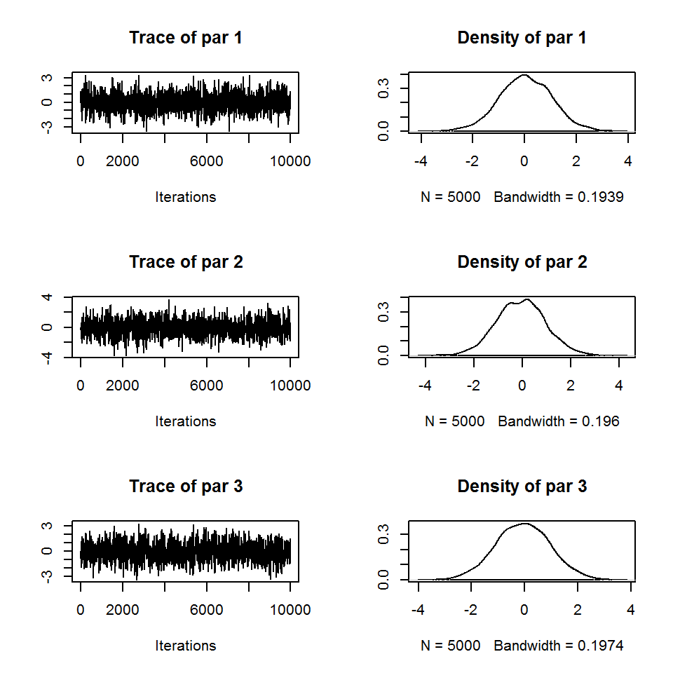
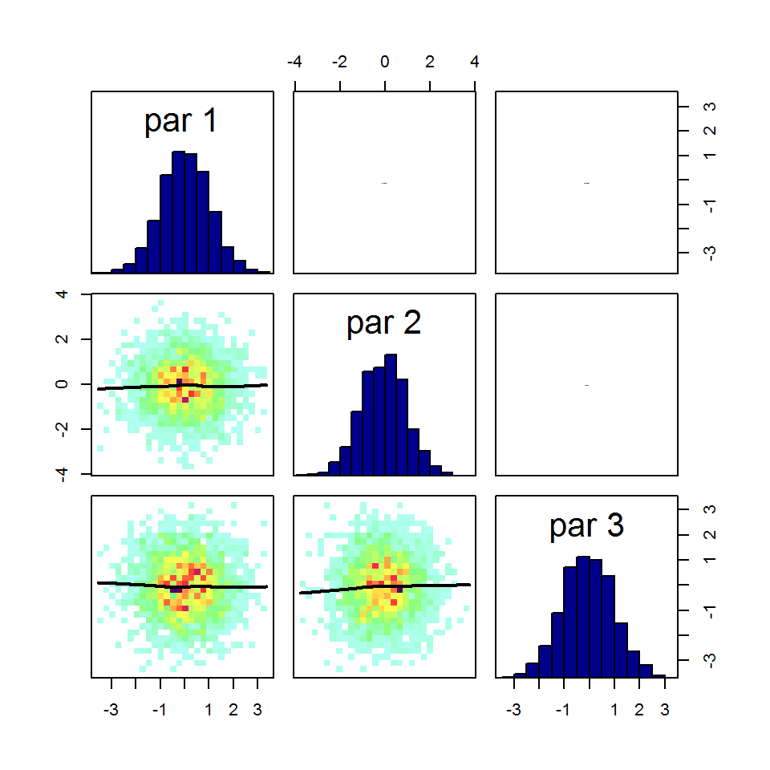
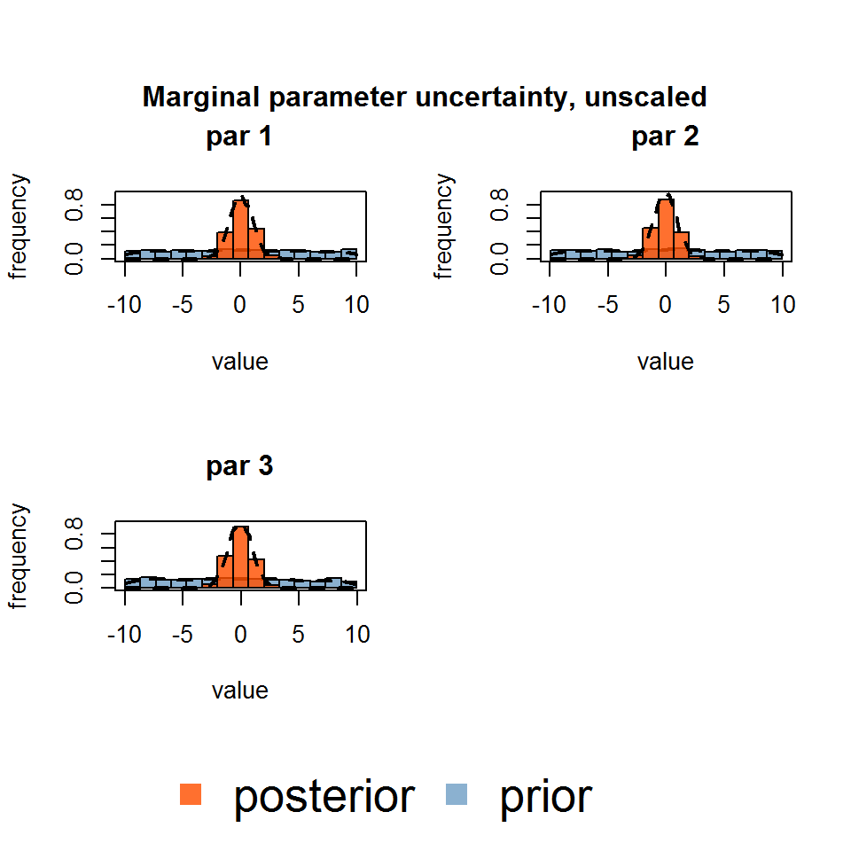
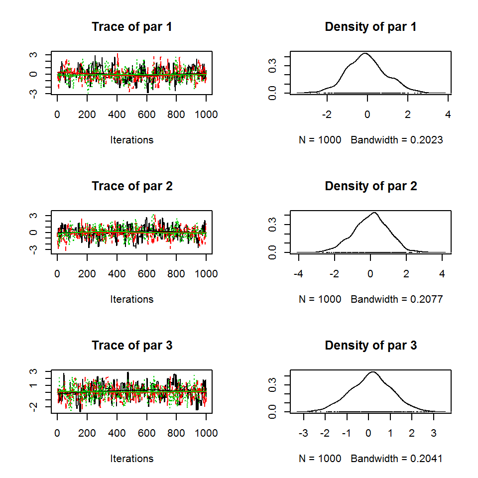
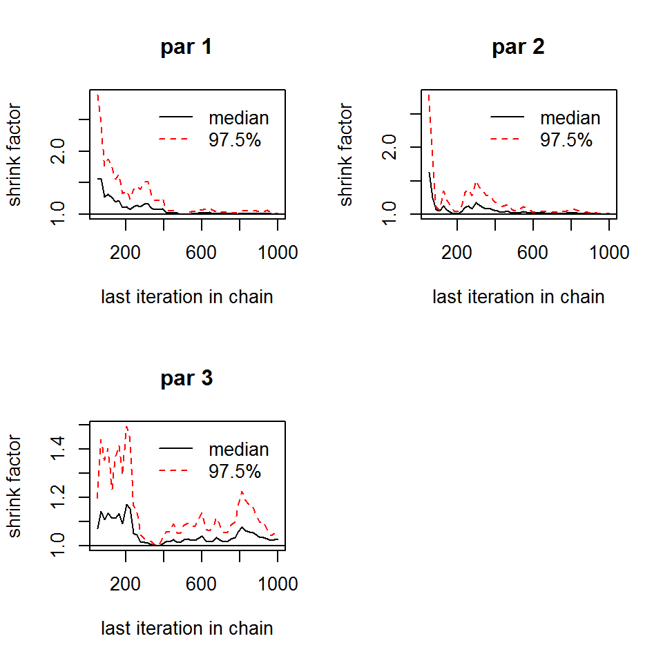
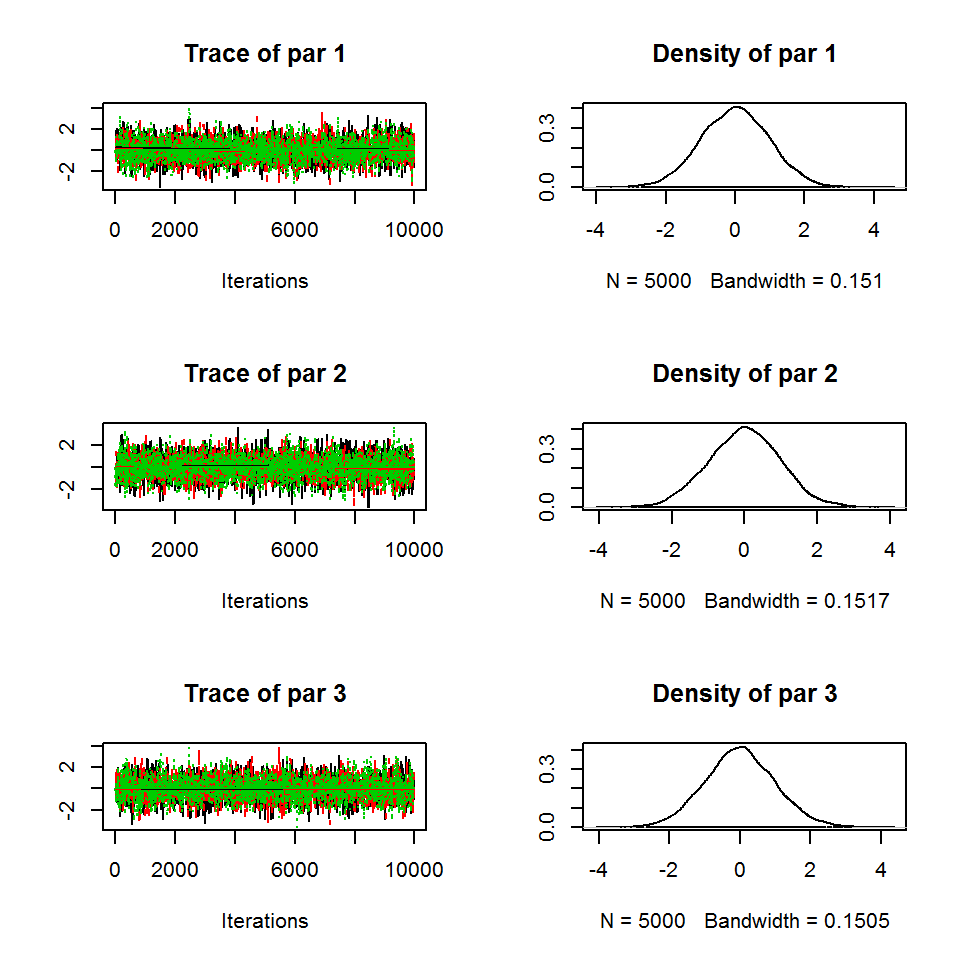
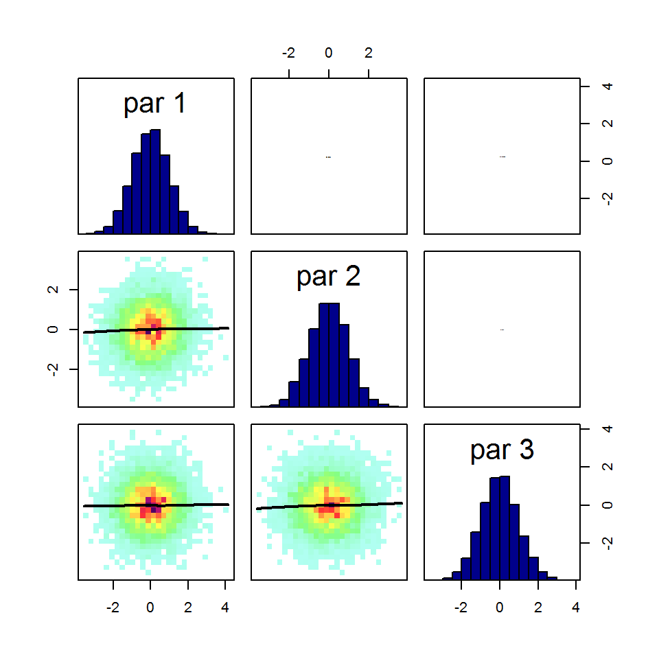
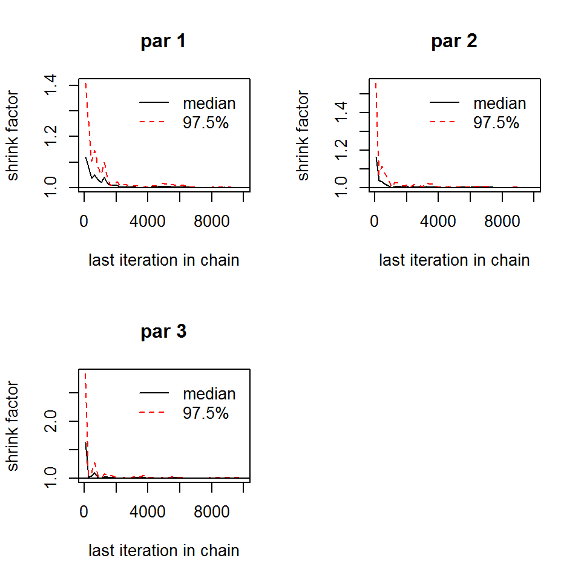
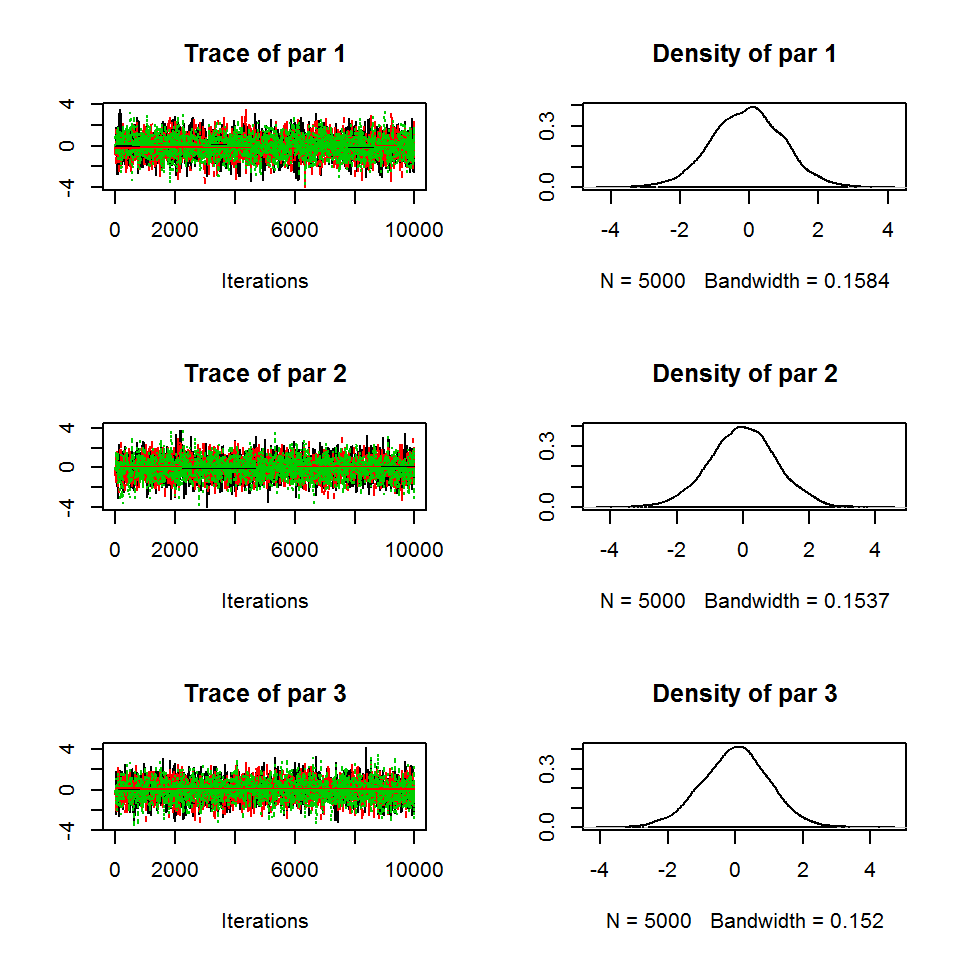
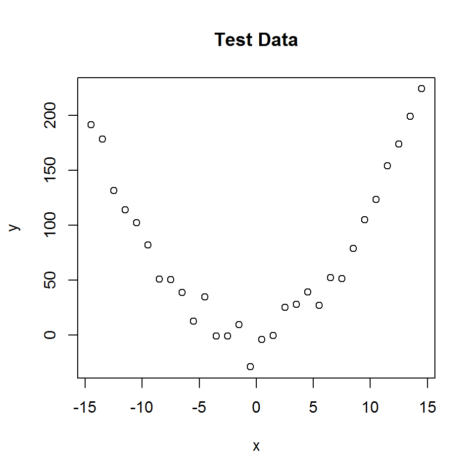

Bayesian Tools
Abstract
The BayesianTools (BT) package supports model analysis (including sensitivity analysis and uncertainty analysis), Bayesian model calibration, as well as model selection and multi-model inference techniques for system models.
Quick start
The purpose of this first section is to give you a quick overview of the most important functions of the BayesianTools (BT) package. For a more detailed description, see the later sections
Installing, loading and citing the package
If you haven’t installed the package yet, either run
install.packages("BayesianTools")Or follow the instructions on https://github.com/florianhartig/BayesianTools to install a development or an older version.
Loading and citation
library(BayesianTools)
citation("BayesianTools")##
## To cite package 'BayesianTools' in publications use:
##
## Florian Hartig, Francesco Minunno and Stefan Paul (2017).
## BayesianTools: General-Purpose MCMC and SMC Samplers and Tools
## for Bayesian Statistics. R package version 0.1.4.
## https://github.com/florianhartig/BayesianTools
##
## A BibTeX entry for LaTeX users is
##
## @Manual{,
## title = {BayesianTools: General-Purpose MCMC and SMC Samplers and Tools for Bayesian Statistics},
## author = {Florian Hartig and Francesco Minunno and Stefan { Paul}},
## year = {2017},
## note = {R package version 0.1.4},
## url = {https://github.com/florianhartig/BayesianTools},
## }Note: BayesianTools calls a number of secondary packages. Particular important is coda, which is used on a number of plots and summary statistics. If you make heavy use of the summary statistics and diagnostics plots, it would be nice to cite coda as well!
Pro-tip: if you are running a stochastic algorithms such as an MCMC, you should always set or record your random seed to make your results reproducible (otherwise, results will change slightly every time you run the code)
set.seed(123)In a real application, to ensure reproducibility, it would also be useful to record the session
sessionInfo()which lists the version number of R and all loaded packages.
The Bayesian Setup
The central object in the BT package is the BayesianSetup. This class contains the information about the model to be fit (likelihood), and the priors for the model parameters.
A BayesianSetup is created by the createBayesianSetup function. The function expects a log-likelihood and (optional) a log-prior. It then automatically creates the posterior and various convenience functions for the samplers.
Advantages of the BayesianSetup include 1) support for automatic parallelization, 2) functions are wrapped in try-catch statements to avoid crashes during long MCMC evaluations, 3) and the posterior checks if the parameter is outside the prior first, in which case the likelihood is not evaluated (makes the algorithms faster for slow likelihoods).
If no prior information is provided, an unbounded flat prior is created. If no explicit prior, but lower and upper values are provided, a standard uniform prior with the respective bounds is created, including the option to sample from this prior, which is useful for SMC and also for getting starting values. This option is used in the following example, which creates a multivariate normal likelihood density and a uniform prior for 3 parameters.
ll <- generateTestDensityMultiNormal(sigma = "no correlation")
bayesianSetup = createBayesianSetup(likelihood = ll, lower = rep(-10, 3), upper = rep(10, 3))See later more detailed description about the BayesianSetup.
Hint: for an example how to run this steps for dynamic ecological model, see ?VSEM
Running MCMC and SMC functions
Once you have your setup, you may want to run a calibration. The runMCMC function is the main wrapper for all other implemented MCMC/SMC functions. It always takes the following arguments
- A bayesianSetup (alternatively, the log target function)
- The sampler name
- A list with settings - if a parameter is not provided, the default will be used
As an example, choosing the sampler name “Metropolis” calls a versatile Metropolis-type MCMC with options for covariance adaptation, delayed rejection, tempering and Metropolis-within-Gibbs sampling. For details, see the the later reference on MCMC samplers. This is how we would call this sampler with default settings
iter = 10000
settings = list(iterations = iter, message = FALSE)
out <- runMCMC(bayesianSetup = bayesianSetup, sampler = "Metropolis", settings = settings)Summarizing outputs
All samplers can be plotted and summarized via the console with the standard print, and summary commands
print(out)## [1] "mcmcSampler - you can use the following methods to summarize, plot or reduce this class:"
## [1] getSample plot print summary
## see '?methods' for accessing help and source codesummary(out)## # # # # # # # # # # # # # # # # # # # # # # # # #
## ## MCMC chain summary ##
## # # # # # # # # # # # # # # # # # # # # # # # # #
##
## # MCMC sampler: Metropolis
## # Nr. Chains: 1
## # Iterations per chain: 10000
## # Rejection rate: 0.686
## # Effective sample size: 932
## # Runtime: 3.06 sec.
##
## # Parameters
## MAP 2.5% median 97.5%
## par 1 0.001 -1.981 0.022 2.050
## par 2 0.000 -2.095 -0.060 1.968
## par 3 -0.001 -2.085 -0.048 1.967
##
## ## DIC: 11.72
## ## Convergence
## Gelman Rubin multivariate psrf: Only one chain; convergence cannot be determined!
##
## ## Correlations
## par 1 par 2 par 3
## par 1 1.000 0.004 -0.005
## par 2 0.004 1.000 0.017
## par 3 -0.005 0.017 1.000and plottted with several plot functions. The marginalPlot can either be plotted as histograms with density overlay, which is also the default, or as a violin plot (see “?marginalPlot”).
plot(out) # plot internally calls tracePlot(out)
correlationPlot(out)
marginalPlot(out)
Other Functions that can be applied to all samplers include model selection scores such as the DIC and the marginal Likelihood (for the calculation of the Bayes factor, see later section for more details), and the Maximum Aposteriori Value (MAP). For the marginal likelihood calculation it is possible to chose from a set of methods (see “?marginalLikelihood”).
marginalLikelihood(out)## $ln.ML
## [1] -8.969702
##
## $ln.lik.star
## [1] -2.756817
##
## $ln.pi.star
## [1] -8.987197
##
## $ln.pi.hat
## [1] -2.774312
##
## $method
## [1] "Chib"DIC(out)## $DIC
## [1] 11.72016
##
## $IC
## [1] 14.81802
##
## $pD
## [1] 3.097861
##
## $pV
## [1] 3.411328
##
## $Dbar
## [1] 8.622295
##
## $Dhat
## [1] 5.524434MAP(out)## $parametersMAP
## par 1 par 2 par 3
## 1.000968e-03 6.672794e-05 -9.910697e-04
##
## $valuesMAP
## Lposterior Llikelihood Lprior
## -11.744013 -2.756817 -8.987197You can extract (a part of) the sampled parameter values by
getSample(out, start = 100, end = NULL, thin = 5, whichParameters = 1:2)For all samplers, you can conveniently perform multiple runs via the nrChains argument
iter = 1000
settings = list(iterations = iter, nrChains = 3, message = FALSE)
out <- runMCMC(bayesianSetup = bayesianSetup, sampler = "Metropolis", settings = settings)The result is an object of mcmcSamplerList, which should allow to do everything one can do with an mcmcSampler object (with slightly different output sometimes).
print(out)## [1] "mcmcSamplerList - you can use the following methods to summarize, plot or reduce this class:"
## [1] getSample plot print summary
## see '?methods' for accessing help and source codesummary(out)## # # # # # # # # # # # # # # # # # # # # # # # # #
## ## MCMC chain summary ##
## # # # # # # # # # # # # # # # # # # # # # # # # #
##
## # MCMC sampler: Metropolis
## # Nr. Chains: 3
## # Iterations per chain: 1000
## # Rejection rate: 0.688
## # Effective sample size: 301
## # Runtime: 1.11 sec.
##
## # Parameters
## psf MAP 2.5% median 97.5%
## par 1 1.004 -0.001 -1.937 -0.093 2.010
## par 2 1.004 0.000 -1.997 0.067 1.807
## par 3 1.027 0.000 -1.787 0.127 1.994
##
## ## DIC: 11.212
## ## Convergence
## Gelman Rubin multivariate psrf: 1.015
##
## ## Correlations
## par 1 par 2 par 3
## par 1 1.000 -0.062 -0.049
## par 2 -0.062 1.000 0.065
## par 3 -0.049 0.065 1.000For example, in the plot you now see 3 chains.
plot(out)
There are a few additional functions that may only be available for lists, for example convergence checks
#getSample(out, coda = F)
gelmanDiagnostics(out, plot = T)
## Potential scale reduction factors:
##
## Point est. Upper C.I.
## par 1 1.00 1.02
## par 2 1.00 1.01
## par 3 1.03 1.06
##
## Multivariate psrf
##
## 1.02BayesianSetup Reference
Reference on creating likelihoods
The likelihood should be provided as a log density function.
ll = logDensity(x)See options for parallelization below. We will use a simple 3-d multivariate normal density for this demonstration.
ll <- generateTestDensityMultiNormal(sigma = "no correlation")
bayesianSetup = createBayesianSetup(likelihood = ll, lower = rep(-10, 3), upper = rep(10, 3))Parallelization of the likelihood evaluations
Likelihoods are often costly to compute. If that is the case for you, you should think about parallelization possibilities. The ‘createBayesianSetup’ function has the input variable ‘parallel’, with the following options
- F / FALSE means no parallelization should be used
- T / TRUE means that automatic parallelization options from R are used (careful: this will not work if your likelihood writes to file, or uses global variables or functions - see general R help on parallelization)
- “external”, assumed that the likelihood is already parallelized. In this case, the function needs to accept a matrix with parameters as columns, and rows as the different model runs you want to evaluate. This is the most likely option to use if you have a complicated setup (file I/O, HPC cluster) that cannot be treated with the standard R parallelization.
Algorithms in the BayesianTools package can make use of parallel computing if this option is specified in the BayesianSetup. Note that currently, parallelization is used by the following algorithms: SMC, DEzs and DREAMzs sampler. It can also be used through the BayesianSetup with the functions of the sensitivity package.
Here some more details on the parallelization
1. In-build parallelization:
The in-build parallelization is the easiest way to make use of parallel computing. In the “parallel” argument you can choose the number of cores used for parallelization. Alternatively for TRUE or “auto” all available cores except for one will be used. Now the proposals are evaluated in parallel. Technically, the in-build parallelization uses an R cluster to evaluate the posterior density function. The input for the parallel function is a matrix, where each column represents a parameter and each row a proposal. In this way, the proposals can be evaluated in parallel. For sampler, where only one proposal is evaluated at a time (namely the Metropolis based algorithms as well as DE/DREAM without the zs extension), no parallelization can be used.
2. External parallelization
The second option is to use an external parallelization. Here, a parallelization is attempted in the user defined likelihood function. To make use of external parallelization, the likelihood function needs to take a matrix of proposals and return a vector of likelihood values. In the proposal matrix each row represents one proposal, each column a parameter. Further, you need to specify the “external” parallelization in the “parallel” argument. In simplified terms the use of external parallelization uses the following steps:
## Definition of likelihood function
likelihood <- function(matrix){
# Calculate likelihood in parallel
# Return vector of likelihood valus
}
## Create Bayesian Setup
BS <- createBayesianSetup(likelihood, parallel = "external" ...)
## Run MCMC
runMCMC(BS, sampler = "SMC", ...)** Remark: even though parallelization can significantly reduce the computation time, it is not always useful because of the so-called communication overhead (computational time for distributing and retrieving infos from the parallel cores). For models with low computational cost, this procedure can take more time than the actual evaluation of the likelihood. If in doubt, make a small comparison of the runtime before starting your large sampling. **
Reference on creating priors
The prior in the BayesianSetup consists of four parts
- A log density function
- An (optional) sampling function (must be a function without parameters, that returns a draw from the prior)
- lower / upper boundaries
- Additional info - best values, names of the parameters, …
These information can passed by first creating an a extra object, via createPrior, or through the the createBayesianSetup function.
Creating priors
You have 5 options to create a prior
- Do not set a prior - in this case, an infinite prior will be created
- Set min/max values - a bounded flat prior and the corresponding sampling function will be created
- Use one of the pre-definded priors, see ?createPrior for a list. One of the options here is to use a previous MCMC output as new prior. Pre-defined priors will usually come with a sampling function
- Use a user-define prior, see ?createPrior
- Create a prior from a previous MCMC sample
Creating user-defined priors
If creating a user-defined prior, the following information can/should be provided to createPrior:
- A log density function, as a function of a parameter vector x, same syntax as the likelihood
- Additionally, you should consider providing a function that samples from the prior, because many samplers (SMC, DE, DREAM) can make use of this function for initial conditions. If you use one of the pre-defined priors, the sampling function is already implemented
- lower / upper boundaries (can be set on top of any prior, to create truncation)
- Additional info - best values, names of the parameters, …
Creating a prior from a previous MCMC sample
The following example from the help shows how this works
# Create a BayesianSetup
ll <- generateTestDensityMultiNormal(sigma = "no correlation")
bayesianSetup = createBayesianSetup(likelihood = ll, lower = rep(-10, 3), upper = rep(10, 3))
settings = list(iterations = 2500, message = FALSE)
out <- runMCMC(bayesianSetup = bayesianSetup, settings = settings)
newPrior = createPriorDensity(out, method = "multivariate", eps = 1e-10, lower = rep(-10, 3), upper = rep(10, 3), best = NULL)
bayesianSetup <- createBayesianSetup(likelihood = ll, prior = newPrior)
settings = list(iterations = 1000, message = FALSE)
out <- runMCMC(bayesianSetup = bayesianSetup, settings = settings)MCMC sampler reference
runMCMC
The runMCMC function is the central function for starting MCMC algorithms in the BayesianTools package. It requires a bayesianSetup, a choice of sampler (standard is DEzs), and optionally changes to the standard settings of the chosen sampler.
runMCMC(bayesianSetup, sampler = “DEzs”, settings = NULL)
One optional argument that you can always use is nrChains - the default is 1. If you choose more, the runMCMC will perform several runs.
ll <- generateTestDensityMultiNormal(sigma = "no correlation")
bayesianSetup = createBayesianSetup(likelihood = ll, lower = rep(-10, 3), upper = rep(10, 3))
settings = list(iterations = 10000, nrChains= 3, message = FALSE)
out <- runMCMC(bayesianSetup = bayesianSetup, sampler = "Metropolis", settings = settings)
plot(out)
marginalPlot(out)
correlationPlot(out)
gelmanDiagnostics(out, plot=T)
## Potential scale reduction factors:
##
## Point est. Upper C.I.
## par 1 1 1.00
## par 2 1 1.00
## par 3 1 1.01
##
## Multivariate psrf
##
## 1# option to restart the sampler
settings = list(iterations = 1000, nrChains= 1, message = FALSE)
out <- runMCMC(bayesianSetup = bayesianSetup, sampler = "Metropolis", settings = settings)
out2 <- runMCMC(bayesianSetup = out)
out3 <- runMCMC(bayesianSetup = out2)
#plot(out)
#plot(out3)
# create new prior from posterior sample
newPriorFromPosterior <- createPriorDensity(out2)The different MCMC samplers
For convenience we define a number of iterations
iter = 10000The Metropolis MCMC class
The BayesianTools package is able to run a large number of Metropolis-Hastings (MH) based algorithms All of these samplers can be accessed by the “Metropolis” sampler in the runMCMC function by specifying the sampler’s settings.
The following code gives an overview about the default settings of the MH sampler.
applySettingsDefault(sampler = "Metropolis")## $sampler
## [1] "Metropolis"
##
## $startValue
## NULL
##
## $iterations
## [1] 10000
##
## $optimize
## [1] TRUE
##
## $proposalGenerator
## NULL
##
## $consoleUpdates
## [1] 100
##
## $burnin
## [1] 0
##
## $thin
## [1] 1
##
## $parallel
## NULL
##
## $adapt
## [1] TRUE
##
## $adaptationInterval
## [1] 500
##
## $adaptationNotBefore
## [1] 3000
##
## $DRlevels
## [1] 1
##
## $proposalScaling
## NULL
##
## $adaptationDepth
## NULL
##
## $temperingFunction
## NULL
##
## $gibbsProbabilities
## NULL
##
## $currentChain
## [1] 1
##
## $message
## [1] TRUE
##
## $nrChains
## [1] 1
##
## $runtime
## [1] 0
##
## $sessionInfo
## R version 3.4.3 (2017-11-30)
## Platform: x86_64-w64-mingw32/x64 (64-bit)
## Running under: Windows 8.1 x64 (build 9600)
##
## Matrix products: default
##
## locale:
## [1] LC_COLLATE=German_Germany.1252 LC_CTYPE=German_Germany.1252
## [3] LC_MONETARY=German_Germany.1252 LC_NUMERIC=C
## [5] LC_TIME=German_Germany.1252
##
## attached base packages:
## [1] stats graphics grDevices utils datasets methods base
##
## other attached packages:
## [1] BayesianTools_0.1.4
##
## loaded via a namespace (and not attached):
## [1] Rcpp_0.12.14 DHARMa_0.1.5 knitr_1.18
## [4] magrittr_1.5 MASS_7.3-47 tmvtnorm_1.4-10
## [7] lattice_0.20-35 bridgesampling_0.4-0 foreach_1.4.4
## [10] stringr_1.2.0 tools_3.4.3 grid_3.4.3
## [13] coda_0.19-1 htmltools_0.3.6 IDPmisc_1.1.17
## [16] iterators_1.0.9 yaml_2.1.16 rprojroot_1.3-2
## [19] digest_0.6.13 gmm_1.6-1 numDeriv_2016.8-1
## [22] Brobdingnag_1.2-4 Matrix_1.2-12 codetools_0.2-15
## [25] evaluate_0.10.1 rmarkdown_1.8 sandwich_2.4-0
## [28] stringi_1.1.6 compiler_3.4.3 backports_1.1.2
## [31] stats4_3.4.3 mvtnorm_1.0-6 zoo_1.8-1The following examples show how the different settings can be used. As you will see different options can be activated singly or in combination.
Standard MH MCMC
The following settings will run the standard Metropolis Hastings MCMC.
Refernences: Hastings, W. K. (1970). Monte carlo sampling methods using markov chains and their applications. Biometrika 57 (1), 97-109.
Metropolis, N., A. W. Rosenbluth, M. N. Rosenbluth, A. H. Teller, and E. Teller (1953). Equation of state calculations by fast computing machines. The journal of chemical physics 21 (6), 1087 - 1092.
settings <- list(iterations = iter, adapt = F, DRlevels = 1, gibbsProbabilities = NULL, temperingFunction = NULL, optimize = F, message = FALSE)
out <- runMCMC(bayesianSetup = bayesianSetup, sampler = "Metropolis", settings = settings)
plot(out) Standard MH MCMC, prior optimization
This sampler uses an optimization step prior to the sampling process. The optimization aims at improving the starting values and the covariance of the proposal distribution.
settings <- list(iterations = iter, adapt = F, DRlevels = 1, gibbsProbabilities = NULL, temperingFunction = NULL, optimize = T, message = FALSE)
out <- runMCMC(bayesianSetup = bayesianSetup, sampler = "Metropolis", settings = settings)
plot(out) Adaptive MCMC, prior optimization
In the adaptive Metropolis sampler (AM) the information already acquired in the sampling process is used to improve (or adapt) the proposal function. In the BayesianTools package the history of the chain is used to adapt the covariance of the propoasal distribution.
References: Haario, H., E. Saksman, and J. Tamminen (2001). An adaptive metropolis algorithm. Bernoulli , 223-242.
settings <- list(iterations = iter, adapt = T, DRlevels = 1, gibbsProbabilities = NULL, temperingFunction = NULL, optimize = T, message = FALSE)
out <- runMCMC(bayesianSetup = bayesianSetup, sampler = "Metropolis", settings = settings)
plot(out) Standard MCMC, prior optimization, delayed rejection
Even though rejection is an essential step of a MCMC algorithm it can also mean that the proposal distribution is (locally) badly tuned to the target distribution. In a delayed rejection (DR) sampler a second (or third, etc.) proposal is made before rejection. This proposal is usually drawn from a different distribution, allowing for a greater flexibility of the sampler. In the BayesianTools package the number of delayed rejection steps as well as the scaling of the proposals can be determined. ** Note that the current version only supports two delayed rejection steps. **
References: Green, Peter J., and Antonietta Mira. “Delayed rejection in reversible jump Metropolis-Hastings.” Biometrika (2001): 1035-1053.
settings <- list(iterations = iter, adapt = F, DRlevels = 2, gibbsProbabilities = NULL, temperingFunction = NULL, optimize = T, message = FALSE)
out <- runMCMC(bayesianSetup = bayesianSetup, sampler = "Metropolis", settings = settings)
plot(out) Adaptive MCMC, prior optimization, delayed rejection
The delayed rejection adaptive Metropolis (DRAM) sampler is merely a combination of the two previous sampler (DR and AM).
References: Haario, Heikki, et al. “DRAM: efficient adaptive MCMC.” Statistics and Computing 16.4 (2006): 339-354.
settings <- list(iterations = iter, adapt = T, DRlevels = 2, gibbsProbabilities = NULL, temperingFunction = NULL, optimize = T, message = FALSE)
out <- runMCMC(bayesianSetup = bayesianSetup, sampler = "Metropolis", settings = settings)
plot(out) Standard MCMC, prior optimization, Gibbs updating
To reduce the dimensions of the target function a Metropolis-within-Gibbs sampler can be run with the BayesianTools package. This means in each iteration only a subset of the parameter vector is updated. In the example below at most two (of the three) parameters are updated each step, and it is double as likely to vary one than varying two.
** Note that currently adaptive cannot be mixed with Gibbs updating! **
settings <- list(iterations = iter, adapt = T, DRlevels = 1, gibbsProbabilities = c(1,0.5,0), temperingFunction = NULL, optimize = T, message = FALSE)
out <- runMCMC(bayesianSetup = bayesianSetup, sampler = "Metropolis", settings = settings)
plot(out) Standard MCMC, prior optimization, gibbs updating, tempering
Simulated tempering is closely related to simulated annealing (e.g. Bélisle, 1992) in optimization algorithms. The idea of tempering is to increase the acceptance rate during burn-in. This should result in a faster initial scanning of the target function. To include this a tempering function needs to be supplied by the user. The function describes how the acceptance rate is influenced during burn-in. In the example below an exponential decline approaching 1 (= no influece on the acceptance rate)is used.
References: Bélisle, C. J. (1992). Convergence theorems for a class of simulated annealing algorithms on rd. Journal of Applied Probability, 885–895.
C. J. Geyer (2011) Importance sampling, simulated tempering, and umbrella sampling, in the Handbook of Markov Chain Monte Carlo, S. P. Brooks, et al (eds), Chapman & Hall/CRC.
temperingFunction <- function(x) 5 * exp(-0.01*x) + 1
settings <- list(iterations = iter, adapt = F, DRlevels = 1, gibbsProbabilities = c(1,1,0), temperingFunction = temperingFunction, optimize = T, message = FALSE)
out <- runMCMC(bayesianSetup = bayesianSetup, sampler = "Metropolis", settings = settings)
plot(out) Differential Evolution MCMC
The BT package implements two versions of the differential evolution MCMC. In doubt, you should use the DEzs option.
The first is the normal DE MCMC, corresponding to Ter Braak, Cajo JF. “A Markov Chain Monte Carlo version of the genetic algorithm Differential Evolution: easy Bayesian computing for real parameter spaces.” Statistics and Computing 16.3 (2006): 239-249. In this sampler multiple chains are run in parallel (but not in the sense of parallel computing). The main diference to the Metrpolis based algorithms is the creation of the propsal. Generally all samplers use the current positin of the chain and add a step in the parameter space to generate a new proposal. Whereas in the Metropolis based sampler this step is usually drawn from a multivariate normal distribution (yet every distribution is possible), the DE sampler uses the current position of two other chains to generate the step for each chain. For sucessful sampling at least 2*d chains, with d being the number of parameters, need to be run in parallel.
settings <- list(iterations = iter, message = FALSE)
out <- runMCMC(bayesianSetup = bayesianSetup, sampler = "DE", settings = settings)
plot(out) The second is the Differential Evolution MCMC with snooker update and sampling from past states, corresponding to ter Braak, Cajo JF, and Jasper A. Vrugt. “Differential evolution Markov chain with snooker updater and fewer chains.” Statistics and Computing 18.4 (2008): 435-446. This extension covers two differences to the normal DE MCMC. First a snooker update is used based on a user defined probability. Second also past states of other chains are respected in the creation of the proposal. These extensions allow for fewer chains (i.e. 3 chains are usually enough for up to 200 parameters) and parallel computing as the current position of each chain is only dependent on the past states of the other chains.
settings <- list(iterations = iter, message = FALSE)
out <- runMCMC(bayesianSetup = bayesianSetup, sampler = "DEzs", settings = settings)
plot(out) DREAM sampler
Also for the DREAM sampler, there are two versions included. First of all, the standard DREAM sampler, see Vrugt, Jasper A., et al. “Accelerating Markov chain Monte Carlo simulation by differential evolution with self-adaptive randomized subspace sampling.” International Journal of Nonlinear Sciences and Numerical Simulation 10.3 (2009): 273-290.
This sampler is largely build on the DE sampler with some significant differences: 1) More than two chains can be used to generate a proposal. 2) A randomized subspace sampling can be used to enhance the efficiency for high dimensional posteriors. Each dimension is updated with a crossover probalitity CR. To speed up the exploration of the posterior DREAM adapts the distribution of CR values during burn-in to favor large jumps over small ones. 3) Outlier chains can be removed during burn-in.
settings <- list(iterations = iter, message = FALSE)
out <- runMCMC(bayesianSetup = bayesianSetup, sampler = "DREAM", settings = settings)
plot(out) The second implementation uses the same extension as the DEzs sampler. Namely sampling from past states and a snooker update. Also here this extension allows for the use of fewer chains and parallel computing.
Again, in doubt you should prefer “DREAMzs”.
settings <- list(iterations = iter, message = FALSE)
out <- runMCMC(bayesianSetup = bayesianSetup, sampler = "DREAMzs", settings = settings)
#plot(out) T-walk
The T-walk is a MCMC algorithm developed by Christen, J. Andrés, and Colin Fox. “A general purpose sampling algorithm for continuous distributions (the t-walk).” Bayesian Analysis 5.2 (2010): 263-281. In the sampler two independent points are used to explore the posterior space. Based on probabilities four different moves are used to generate proposals for the two points. As for the DE sampler this procedure requires no tuning of the proposal distribution for efficient sampling in complex posterior distributions.
settings = list(iterations = iter, message = FALSE)
out <- runMCMC(bayesianSetup = bayesianSetup, sampler = "Twalk", settings = settings)Convergence checks for MCMCs
All MCMCs should be checked for convergence. We recommend the standard procedure of Gelmal-Rubin. This procedure requires running several MCMCs (we recommend 3). This can be achieved either directly in the runMCMC (nrChains = 3), or, for runtime reasons, by combining the results of three independent runMCMC evaluations with nrChains = 1.
settings <- list(iterations = iter, nrChains = 3, message = FALSE)
out <- runMCMC(bayesianSetup = bayesianSetup, sampler = "Metropolis", settings = settings)
plot(out)
#chain = getSample(out, coda = T)
gelmanDiagnostics(out, plot = F)## Potential scale reduction factors:
##
## Point est. Upper C.I.
## par 1 1 1.00
## par 2 1 1.01
## par 3 1 1.01
##
## Multivariate psrf
##
## 1Non-MCMC sampling algorithms
MCMCs sample the posterior space by creating a chain in parameter space. While this allows “learning” from past steps, it does not permit the parallel execution of a large number of posterior values at the same time.
An alternative to MCMCs are particle filters, aka Sequential Monte-Carlo (SMC) algorithms. See Hartig, F.; Calabrese, J. M.; Reineking, B.; Wiegand, T. & Huth, A. Statistical inference for stochastic simulation models - theory and application Ecol. Lett., 2011, 14, 816-827
Rejection samling
The easiest option is to simply sample a large number of parameters and accept them according to their posterior value. This option can be emulated with the implemented SMC, setting iterations to 1.
settings <- list(initialParticles = iter, iterations= 1)
out <- runMCMC(bayesianSetup = bayesianSetup, sampler = "SMC", settings = settings)
plot(out) Sequential Monte Carlo (SMC)
The more sophisticated option is using the implemented SMC, which is basically a particle filter that applies several filter steps.
settings <- list(initialParticles = iter, iterations= 10)
out <- runMCMC(bayesianSetup = bayesianSetup, sampler = "SMC", settings = settings)
plot(out) Note that the use of a number for initialParticles requires that the bayesianSetup includes the possibility to sample from the prior.
Model comparison and averaging
There are a number of Bayesian model selection and model comparison methods. The BT implements three of the most common of them, the DIC, the WAIC, and the Bayes factor.
On the Bayes factor, see Kass, R. E. & Raftery, A. E. Bayes Factors J. Am. Stat. Assoc., Amer Statist Assn, 1995, 90, 773-795
An overview on DIC and WAIC is given in Gelman, A.; Hwang, J. & Vehtari, A. (2014) Understanding predictive information criteria for Bayesian models. Statistics and Computing, 24, 997-1016-. On DIC, see also the original reference by Spiegelhalter, D. J.; Best, N. G.; Carlin, B. P. & van der Linde, A. (2002) Bayesian measures of model complexity and fit. J. Roy. Stat. Soc. B, 64, 583-639.
The Bayes factor relies on the calculation of marginal likelihoods, which is numerically not without problems. The BT package currently implements three methods
The recommended way is the method “Chib” (Chib and Jeliazkov, 2001). which is based on MCMC samples, but performs additional calculations. Despite being the current recommendation, note there are some numeric issues with this algorithm that may limit reliability for larger dimensions.
The harmonic mean approximation, is implemented only for comparison. Note that the method is numerically unrealiable and usually should not be used.
The third method is simply sampling from the prior. While in principle unbiased, it will only converge for a large number of samples, and is therefore numerically inefficient.
Example
Data linear Regression with quadratic and linear effect
sampleSize = 30
x <- (-(sampleSize-1)/2):((sampleSize-1)/2)
y <- 1 * x + 1*x^2 + rnorm(n=sampleSize,mean=0,sd=10)
plot(x,y, main="Test Data")
Likelihoods for both
likelihood1 <- function(param){
pred = param[1] + param[2]*x + param[3] * x^2
singlelikelihoods = dnorm(y, mean = pred, sd = 1/(param[4]^2), log = T)
return(sum(singlelikelihoods))
}
likelihood2 <- function(param){
pred = param[1] + param[2]*x
singlelikelihoods = dnorm(y, mean = pred, sd = 1/(param[3]^2), log = T)
return(sum(singlelikelihoods))
}Posterior definitions
setUp1 <- createBayesianSetup(likelihood1, lower = c(-5,-5,-5,0.01), upper = c(5,5,5,30))
setUp2 <- createBayesianSetup(likelihood2, lower = c(-5,-5,0.01), upper = c(5,5,30))MCMC and marginal likelihood calculation
settings = list(iterations = 15000, message = FALSE)
out1 <- runMCMC(bayesianSetup = setUp1, sampler = "Metropolis", settings = settings)
#tracePlot(out1, start = 5000)
M1 = marginalLikelihood(out1)
M1
settings = list(iterations = 15000, message = FALSE)
out2 <- runMCMC(bayesianSetup = setUp2, sampler = "Metropolis", settings = settings)
#tracePlot(out2, start = 5000)
M2 = marginalLikelihood(out2)
M2Model comparison via Bayes factor
Bayes factor (need to reverse the log)
exp(M1$marginalLikelihod - M2$marginalLikelihod)## numeric(0)BF > 1 means the evidence is in favor of M1. See Kass, R. E. & Raftery, A. E. (1995) Bayes Factors. J. Am. Stat. Assoc., Amer Statist Assn, 90, 773-795.
Note that we would have to multiply still with the model priors to arrive at Bayesian model weights.